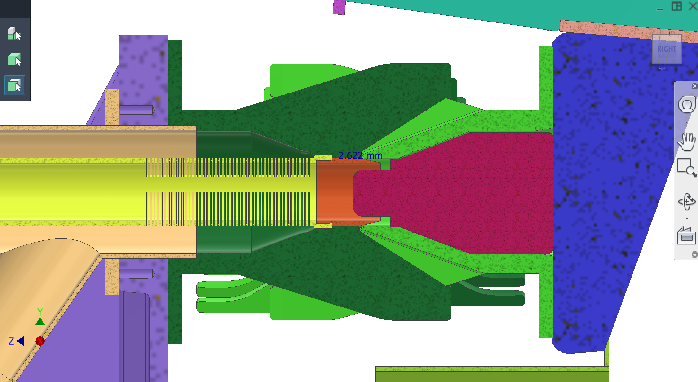
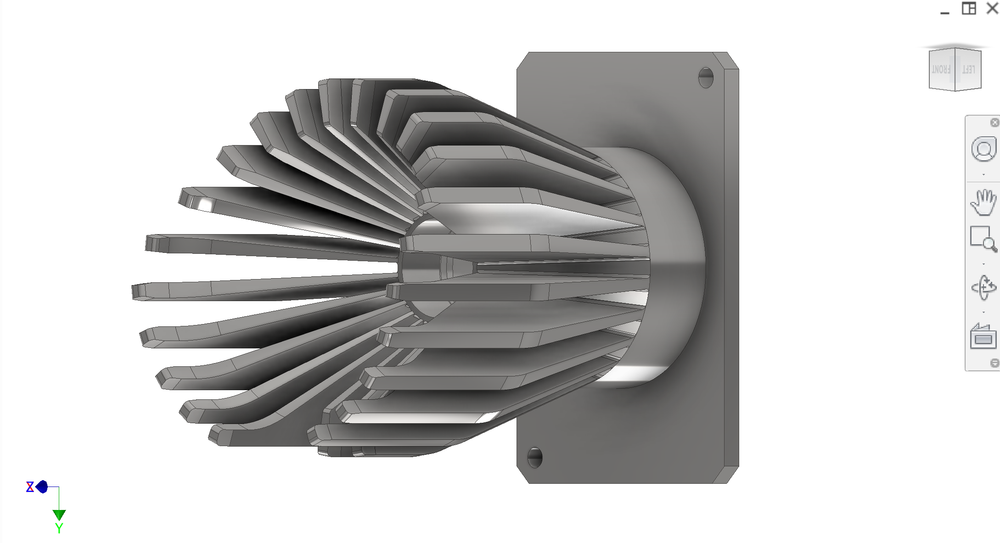
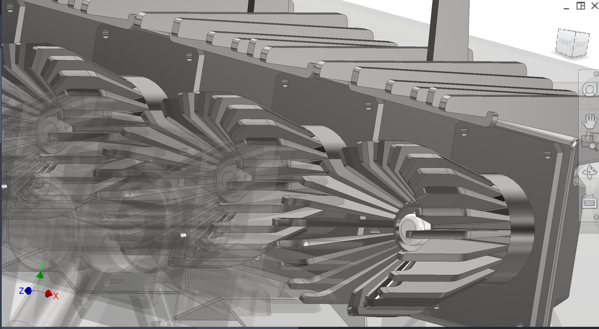
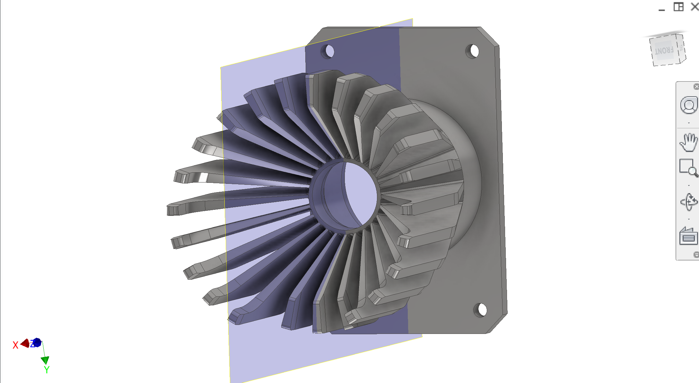
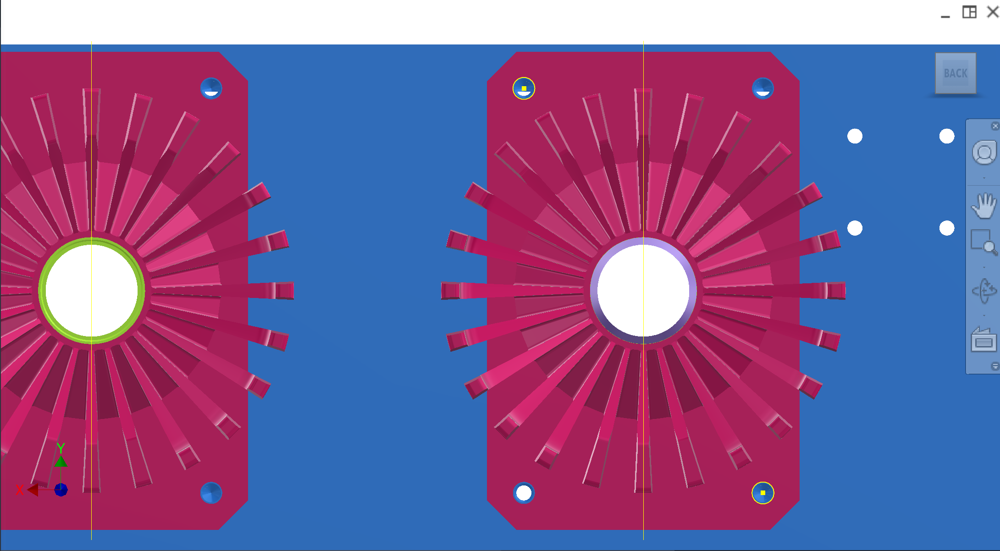

Part of the Extraction & synchronisation section. Driven peelers and their mounting/alignment strategy to mesh with collection-side static peelers.
Introduction
Driven peelers mesh with static peelers (collection) during compression to perform extraction. The peeler core geometry is inherited from the commercial machine; the main open work is defining the mounting flange/plate fabrication and an alignment procedure that preserves concentricity and avoids collisions.
Colour key & components
Key components and intent (colours may vary across CAD figures).
Colour(s)
Component
—
Driven peeler body — geometry inherited from commercial machine; interfaces to driven bracket via a fabricated/machined mounting flange (TBD).
—
Driven peeler mounting flange/plate (TBD) — planned approach: lathe-machine a flange and weld a plate to the peeler so it can be bolted to the driven bracket.
—
Static peeler interface (collection) — static peeler also receives a mounting flange. Inner surface is used as part of the juice vessel/collector interface, so surface finish and sealing are important (see Collection).
Figures
Driven/static peeler CAD, clearance at engagement, and collection mount plate with post-alignment reamed holes highlighted. See also Extraction main gallery.





Figure 1. Peeler clearance when engaged.
1 / 5
P6-870 vs P6-970 peeler scale
Separate reference figure for module size comparison (not part of the slideshow above).
Add figure: Welded flange procedure — lathe-machined flange to peeler body (weld prep + inspection).
Add figure: Mesh / finger interlace — close-up at mid-stroke with minimum gap callouts.
Add figure: Static peeler juice land — surface finish zone mating collector (tie to Collection).
Discussion
Rough design & intent
Core geometry — Peelers are inherited from an existing commercial machine; the intent is to reuse the peeler geometry and build new mounting/adaptation hardware.
Mounting strategy (open) — Fabricate a mount flange/plate for each peeler by machining a flange (lathe) and welding a plate so the peeler can be bolted to the driven bracket (driven side) or collection mount plate (static side).
Known issues & risks
Concentricity & collision — Driven and static peelers must be aligned concentrically. Misalignment can cause collision at end-of-stroke and rapid wear.
Weld distortion — Welding a plate to a peeler risks warping or shifting the peeler axis; fixturing and inspection are required.
Washdown — This is in the splash zone. Mounting features and fasteners must be hygienic and cleanable.
DFM & manufacturing (China)
Fixture and inspection — Contractor to propose fixtures for welding/machining the flange/plate and checks for axis runout/concentricity.
Fasteners — Prefer hygienic fasteners (hex head) and avoid pockets that trap pulp.
Alignment workflow (owner intent)
Provide two loose-fit fastener holes (e.g., top-left and bottom-right corners) on each peeler mount for adjustment.
Adjust driven and static peelers relative to each other until concentric/aligned.
Tighten fasteners to lock, then drill + ream the other two corners through the peeler mount into the bracket/plate.
Install shoulder bolts (or dowels) in the reamed locations for repeatable alignment on reassembly.
Questions for contractor
Propose practical tolerances and an inspection method for peeler concentricity/alignment that prevents collision and controls wear.
Propose the best flange/plate fabrication method (machining route, weld method, fixturing) that preserves peeler axis accuracy.
Recommend whether shoulder bolts, dowel pins, or another locating scheme is best for repeatable reassembly in China fab practice.